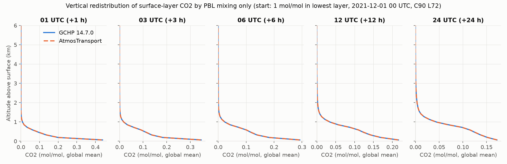
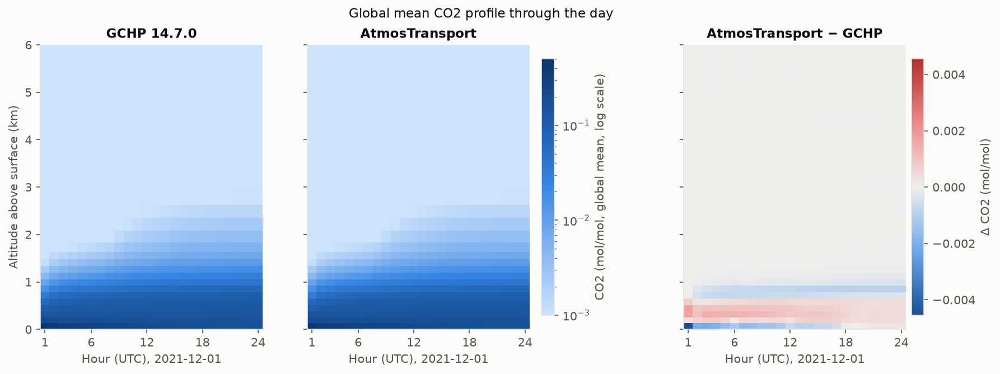
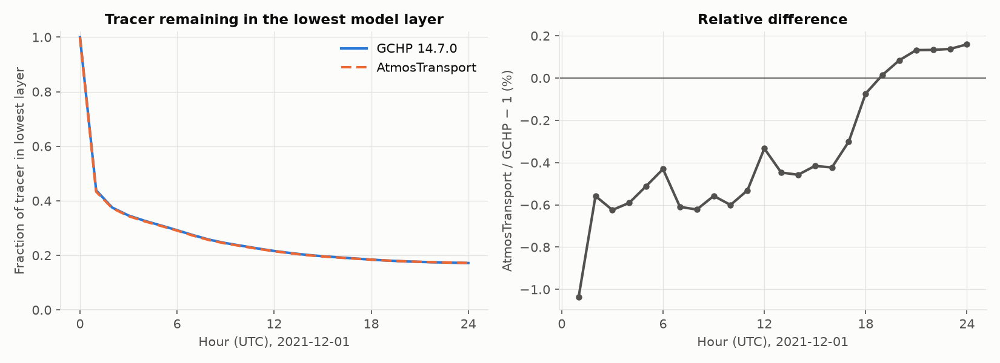
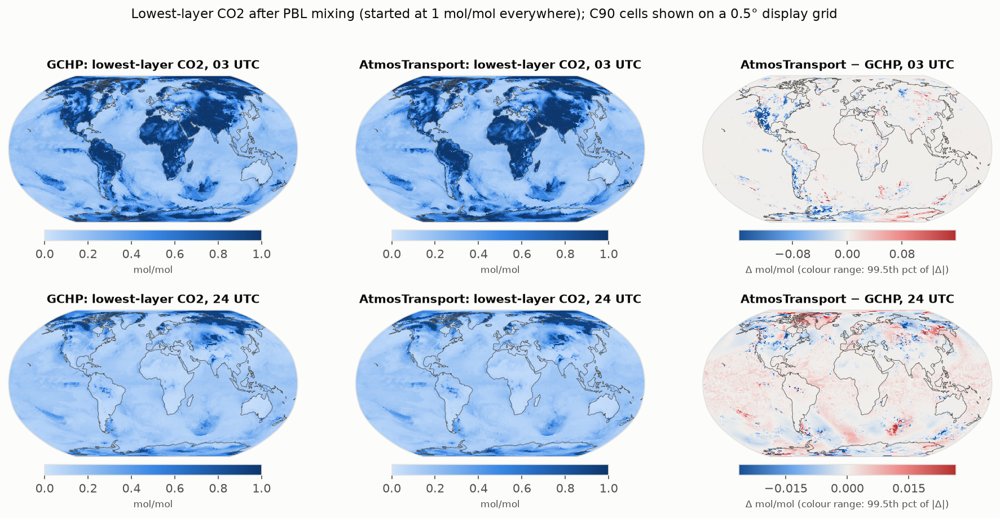

Boundary-layer mixing only, with matched air mass: GCHP 14.7.0 vs AtmosTransport
The experiment and why we do it
The first PBL-only comparison found that AtmosTransport moves CO2 out of the lowest layer 0.3–1.4% faster than GCHP. It also found a known setup difference that could cause part of this: the two models split the column's dry air among the levels differently, so AtmosTransport's lowest layer held 0.65% less dry air (GCHP applies the hybrid-level formula to a dry surface pressure; AtmosTransport removes each layer's own water vapour). This experiment removes that difference and asks how much of the mixing difference is left.
- Question: once both models use the same dry air mass in every layer, do they mix the surface-layer tracer at the same rate? Whatever difference remains must come from the mixing scheme itself, its time step, or its inputs.
- What changed from the first experiment: only AtmosTransport's input binary. It is preprocessed with the new
opt-in option
dry_mass_layers = "geoschem_hybrid", which computes each layer's dry air the GEOS-Chem way (ΔA + ΔB·ps,dry), and without AtmosTransport's global dry-mass pin, since GCHP has none (thegchp_likeprofile, branchfeature/geoschem-dry-mass). GCHP is the same run as before. - Everything else is identical: only non-local boundary-layer mixing is on; CO2 = 1 mol/mol (dry) in the lowest layer and 0 elsewhere; same GEOS-IT meteorology, grid, period and output.
- What agreement looks like: identical air mass and starting tracer amount, and a mixing difference that is small and has no sign that persists through the day. A remaining systematic difference points to the scheme or the time step.
Setup
- Process: non-local boundary-layer mixing only (GCHP
use_non_local_pbl: true; AtmosTransportgeoschem_nonlocal_vdiff). - Air mass: AtmosTransport binary built with
dry_mass_layers = "geoschem_hybrid", no pin. Per-level global dry air mass matches GCHP'sMet_ADto 4×10⁻⁷ at every hour (was up to 0.65%). - Time step (unchanged, still different): GCHP mixes every 600 s; AtmosTransport 10–15 sub-steps per hour.
- Models: GCHP 14.7.0 (CPU, 24 cores); AtmosTransport.jl (Float64, GPU) with the GEOS-IT EFLUX pass-through (PR #73) and the dry-mass option.
Key results
| Measure | First experiment (default air mass) | This experiment (matched air mass) |
|---|---|---|
| Global air-mass difference, AtmosTransport vs GCHP | +2×10⁻⁴ | −3×10⁻⁷ |
| Largest single-cell air-mass difference | 1.7% | 0.14% |
| Tracer amount offset between the models | +0.65% (constant) | none (within 3×10⁻⁵) |
| Tracer left in lowest layer, relative difference at 1 h | −1.4% | −1.0% |
| … at 6 h / 12 h | −0.9% / −0.9% | −0.4% / −0.3% |
| … at 24 h | −0.4% | +0.16% |
| Lowest-layer VMR, cell-by-cell RMS difference | 0.005–0.027 | 0.004–0.026 |
- Matching the air mass removes the tracer offset and roughly halves the mixing difference for most of the day; by 24 UTC AtmosTransport is 0.16% slower than GCHP, so there is no longer a persistent sign.
- The first hour still stands out (AtmosTransport −1.0%), and local cell-by-cell differences are about as large as before. These are the next things to explain: the different time steps (600 s vs a few minutes) are the leading candidate, followed by how each model regrids the C180 meteorology to C90.
Figures





Movie: zonal-mean cross-section through the day
What it shows and why: CO2 averaged around each latitude circle (air-mass weighted, 2° bands), hour by hour, so regional and time-of-day differences between the models stay visible. Compare with the movie of the first experiment.
Table: tracer remaining in the lowest layer
Same data as Figure 3. Download: summary_table.csv
| Hour (UTC) | GCHP | AtmosTransport | Relative difference (%) |
|---|---|---|---|
| 01 | 0.43828 | 0.43373 | -1.037 |
| 02 | 0.37498 | 0.37289 | -0.558 |
| 03 | 0.34617 | 0.34401 | -0.624 |
| 04 | 0.32671 | 0.32478 | -0.590 |
| 05 | 0.30960 | 0.30802 | -0.511 |
| 06 | 0.29220 | 0.29094 | -0.431 |
| 07 | 0.27393 | 0.27226 | -0.609 |
| 08 | 0.25737 | 0.25577 | -0.622 |
| 09 | 0.24496 | 0.24359 | -0.558 |
| 10 | 0.23511 | 0.23370 | -0.600 |
| 11 | 0.22512 | 0.22392 | -0.531 |
| 12 | 0.21609 | 0.21537 | -0.333 |
| 13 | 0.20858 | 0.20765 | -0.447 |
| 14 | 0.20187 | 0.20094 | -0.458 |
| 15 | 0.19677 | 0.19595 | -0.416 |
| 16 | 0.19269 | 0.19187 | -0.423 |
| 17 | 0.18854 | 0.18797 | -0.301 |
| 18 | 0.18434 | 0.18421 | -0.073 |
| 19 | 0.18088 | 0.18091 | +0.015 |
| 20 | 0.17815 | 0.17830 | +0.084 |
| 21 | 0.17611 | 0.17634 | +0.132 |
| 22 | 0.17446 | 0.17470 | +0.133 |
| 23 | 0.17310 | 0.17334 | +0.138 |
| 24 | 0.17184 | 0.17212 | +0.159 |
Models: GCHP 14.7.0; AtmosTransport.jl main 740ee1f9 + GEOS-IT EFLUX pass-through (PR #73) + opt-in GEOS-Chem dry air per layer (branch feature/geoschem-dry-mass, PR pending). Generated 2026-10-15.